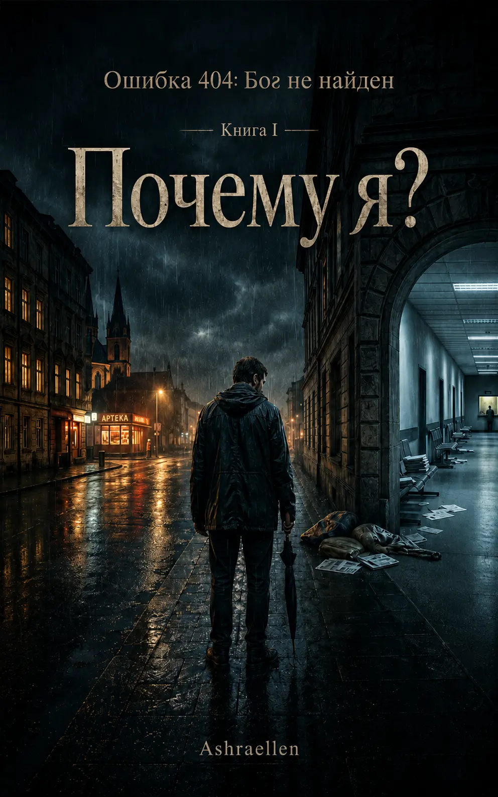

Почему я?
Книга I цикла «Ошибка 404: Бог не найден». Философско-сатирический роман о боли, претензии, вере, бюрократии души и Небесной Канцелярии, которая отвечает не на слова заявления, а на того, кто его подаёт.
О книге
готовится к печати

Книга готовится к печати
«Почему я?» — первая книга цикла «Ошибка 404: Бог не найден». Это история о Владе, юристе и раздражённом заявителе против Мироздания, который пытается превратить собственную боль в корректно оформленную претензию.
Влад не ищет просветления. Он хочет объяснений. Желательно письменных, с подписью, печатью, номером обращения и возможностью обжалования. Он уверен, что страдание даёт ему право требовать ответа, а жизнь обязана хотя бы признать нарушение процедуры.
Но Небесная Канцелярия не работает как отдел компенсаций. Она не спорит, не утешает и не доказывает существование Бога. Она регистрирует запрос, уточняет категорию обращения и постепенно показывает: ошибка может быть не в отсутствии ответа, а в самом способе поиска.
Книга движется от вопроса «почему я?» к более неприятному и точному вопросу: кто именно это спрашивает?
Тема книги
внутреннее дело заявителя
Главная тема книги — человеческая привычка превращать Бога, судьбу, жизнь или Истину в высшую службу поддержки. Человек страдает, теряет, ждёт, обижается, молится, торгуется, благодарит с выставленным счётом внутри — и часто не замечает, что ищет не Истину, а подтверждение собственной версии боли.
«Почему я?» исследует не отсутствие Бога, а сбой в форме обращения. Вопрос может быть настоящим, боль может быть настоящей, но заявитель внутри человека может состоять из гордости, усталости, роли, страха, старых сценариев и желания компенсации.
Это не антирелигиозная сатира. Книга не смеётся над Богом. Она смеётся над человеческой попыткой превратить Бога в гарантию, договор, аварийную кнопку, инстанцию по жалобам и официальный пункт выдачи смысла.
Смысловые слои
слои чтения
- боль как претензия к Мирозданию
- Небесная Канцелярия как состояние, а не место
- молитва, ожидание, благодарность и скрытый счёт
- сухая бюрократия как зеркало духовного запроса
- вопрос «почему я?» и постепенное разрушение старого заявителя
- юмор, который сначала смешит, а потом аккуратно закрывает дверь изнутри
Отрывок
Глава первая — Ошибка 404
Глава первая. Ошибка 404
В тот вечер Влад молился не потому, что верил.
Это было бы слишком красиво.
Он молился потому, что все остальные способы уже закончились. Сначала закончились разумные доводы. Потом деньги. Потом силы. Потом привычная мужская способность говорить себе: "Ничего, прорвёмся", хотя внутри уже давно никто никуда не прорывался, а просто сидел среди обломков и делал вид, что это временная перестановка мебели.
К полуночи в квартире стало тихо.
Не той хорошей тишиной, в которой отдыхают люди с чистой совестью, оплаченной арендой и отсутствием новых сообщений от банка. Нет. Это была другая тишина — липкая, настороженная, почти служебная. Такая бывает в коридорах больниц, в пустых подъездах и в головах людей, которые слишком долго держались и теперь не знают, кому предъявить счёт.
Влад сидел на кухне.
Перед ним стояла чашка чая, давно остывшего до состояния философского упрёка. На столе лежал телефон, блокнот, ручка, несколько квитанций и один маленький крестик на тонкой цепочке. Крестик он не носил. Не то чтобы из принципа. Просто как-то не сложилось. Он лежал в ящике вместе с батарейками, старыми ключами и прочими предметами, смысл которых когда-то был очевиден, а потом тихо умер.
Сегодня Влад достал его.
Сам не зная зачем.
Наверное, чтобы усилить обращение.
Или чтобы показать, что он пришёл не с пустыми руками. Как в учреждение: вот заявление, вот документы, вот доказательства, вот маленький религиозный предмет, подтверждающий, что заявитель пытался сотрудничать с системой.
У людей вообще странная логика в минуты отчаяния. Пока всё более-менее терпимо, они рассуждают о свободе воли, зрелости, психологических границах и необходимости брать ответственность. Но стоит жизни аккуратно поставить колено на грудь, как человек внезапно вспоминает все древние протоколы связи: свечи, кресты, молитвы, обещания, угрозы, торг, слёзы, "Господи, ну пожалуйста" и прочие формы духовной технической поддержки.
Влад посмотрел на крестик.
Потом на квитанции.
Потом снова на крестик.
Крестик выглядел честнее.
Квитанции тоже, но в другом смысле.
Он вздохнул и провёл ладонью по лицу. Лицо было уставшим. Не старым, не сломленным, не трагическим — просто лицом человека, который слишком долго объяснял себе, что всё идёт нормально, и наконец перестал себе верить.
— Ну что, — сказал он в пустоту. — Давайте уже как взрослые.
Пустота не возразила.
Это был хороший знак. Или плохой. С пустотой вообще трудно вести переписку: она редко уточняет позицию.
Влад не знал ни одной молитвы полностью. В детстве он что-то слышал. Потом видел в фильмах. Потом пару раз присутствовал в церкви, где все вокруг уверенно делали движения, смысл которых был ему понятен приблизительно так же, как настройки промышленного станка на японском языке.
Он перекрестился.
Неловко.
Слишком быстро.
Потом ещё раз, медленнее, чтобы не выглядело совсем уж как жест отчаявшегося пользователя перед зависшим компьютером.
— Господи, — сказал он.
И замолчал.
Слово оказалось тяжелее, чем он ожидал. Не возвышенным, не светлым, не торжественным. Просто тяжёлым. Как если бы он назвал по имени того, кому слишком долго не писал, а теперь вдруг пришёл не с любовью, а с претензией.
Он усмехнулся.
— Красиво начинается. Прямо духовная зрелость. Сразу с жалобы.
Он хотел сказать что-нибудь правильное. Что-нибудь благородное. Например: "Да будет воля Твоя". Или: "Научи меня принять". Или: "Укажи путь".
Но внутри поднялось совсем другое.
Не молитва.
Скорее заявление.
Даже не заявление — претензия.
И чем дольше он молчал, тем яснее понимал: если сейчас начнёт говорить красиво, соврёт с первого слова. А он устал врать. Особенно туда, где, по идее, всё равно всё видно.
— Я пытался жить правильно, — сказал он наконец.
Фраза прозвучала жалко.
Он поморщился.
— Нет, не так.
Он встал, прошёлся по кухне, вернулся, сел снова.
— Я пытался жить правильно. Я терпел. Я старался. Я делал вид, что понимаю. Я даже крестился.
Он посмотрел на крестик на столе.
Тот лежал молча и никак не помогал.
— А теперь объясните мне, пожалуйста: почему всё это не работает?
После этих слов стало очень тихо.
Даже холодильник, который обычно гудел с упорством старого пророка, на несколько секунд замолчал. За окном прошла машина. Где-то наверху кто-то уронил что-то тяжёлое, потом сказал короткое слово, не предназначенное для богослужебного употребления.
Влад ждал.
Он не знал, чего именно.
Голоса с неба? Света? Знака? Внутреннего тепла? Того самого ощущения, о котором пишут люди, пережившие встречу с высшим, а потом почему-то продающие курс за девяносто девять евро?
Ничего не произошло.
Разумеется.
Он усмехнулся.
— Ну да. Так я и думал.
Он откинулся на стуле и почувствовал, как злость возвращается на своё законное место.
— Великолепно, — сказал он уже громче. — То есть страдать — пожалуйста. Терпеть — пожалуйста. Делать вид, что всё имеет смысл, — пожалуйста. А как только нужен ответ, сразу тишина. Очень удобно.
Пустота снова не возразила.
— Я, между прочим, не прошу чудес, — сказал Влад. — Уже не прошу. Я просто хочу понять, по какой логике всё это работает. Или хотя бы кто здесь отвечает за качество обслуживания.
Но останавливаться уже не хотелось.
— Я плачу за эту жизнь своим страданием. Хоть кто-нибудь может выдать чек?
И в этот момент телефон на столе завибрировал.
Влад вздрогнул так резко, что чуть не смахнул чашку. Экран загорелся.
Новое уведомление.
Отправитель не определён.
Тема: Ответ на обращение
Влад несколько секунд смотрел на экран.
Потом поднял глаза к потолку.
— Серьёзно?
Потолок был обычный. Белый, с маленькой трещиной возле лампы. Никаких ангелов. Никаких труб. Никакого сияния. Только трещина, похожая на тонкую реку, которая давно решила уйти из этой квартиры первой.
Телефон завибрировал снова.
На экране появилось сообщение:
Ваше обращение зарегистрировано.
Влад не двигался.
Он прочитал строку один раз.
Потом второй.
Потом третий, уже медленнее, как будто от скорости чтения могло измениться содержание.
Ниже появилась следующая строка:
Номер заявки: 777-404-13.
Он моргнул.
— Нет.
Телефон, очевидно, не согласился, потому что сообщение продолжилось:
Пожалуйста, не создавайте повторные обращения.
Это не ускорит проверку алгоритмов вашей души.Влад отложил телефон.
Потом снова взял.
Потом снова отложил.
Встал.
Сел.
Посмотрел на чай.
Чай, как всякий честный свидетель, ничего не объяснял.
— Так, — сказал Влад. — Это либо нервный срыв, либо спам нового уровня.
Он взял телефон и нажал на уведомление.
Экран на мгновение погас.
Потом стал белым.
Посередине появилась надпись:
Ошибка 404: Бог не найден
Ниже, мелким шрифтом:
Возможные причины:
1. Неверный адрес обращения.
2. Запрос направлен не тому адресату.
3. Пользователь ищет Бога вне зоны внутреннего доступа.
4. Запрашивающий субъект требует ответа, не подтвердив своё существование.Влад почувствовал, как внутри всё стало холодным.
Не страшно.
Именно холодно.
Так бывает, когда реальность вдруг делает шаг в сторону, и ты видишь, что за ней нет стены. Только служебный проход, плохо освещённый, с табличкой "Посторонним вход разрешён, но они пожалеют".
Он медленно поставил телефон на стол.
— Что значит "не подтвердив своё существование"?
Телефон ответил сразу.
Для продолжения выберите категорию обращения:
1. Боль.
2. Несправедливость.
3. Почему я?
4. Почему опять я?
5. Я всё понял, но можно без последствий.
6. Другое.Влад закрыл глаза.
Открыл.
Пункты не исчезли.
Он ущипнул себя за руку.
Больно.
Значит, либо не сон, либо сон с хорошей детализацией.
— А если я не хочу выбирать?
На экране появилась новая строка:
Нежелание выбирать также будет зарегистрировано как выбор.
Влад тихо рассмеялся.
Смех вышел нехороший. Сухой. Короткий. Такой смех бывает у людей, которым вдруг сообщили, что их личная трагедия прекрасно вписывается в общую административную процедуру.
— Великолепно, — сказал он. — Даже у Бога бюрократия.
Ответ пришёл мгновенно:
Бюрократия создана людьми.
Мы лишь вынуждены использовать понятный вам интерфейс.Влад перестал смеяться.
Настоящий фрагмент из главы первой. Выбран как вход в книгу: здесь впервые появляется жалоба, ответ на обращение и сухой интерфейс Небесной Канцелярии.
 — mark of presence
— mark of presence